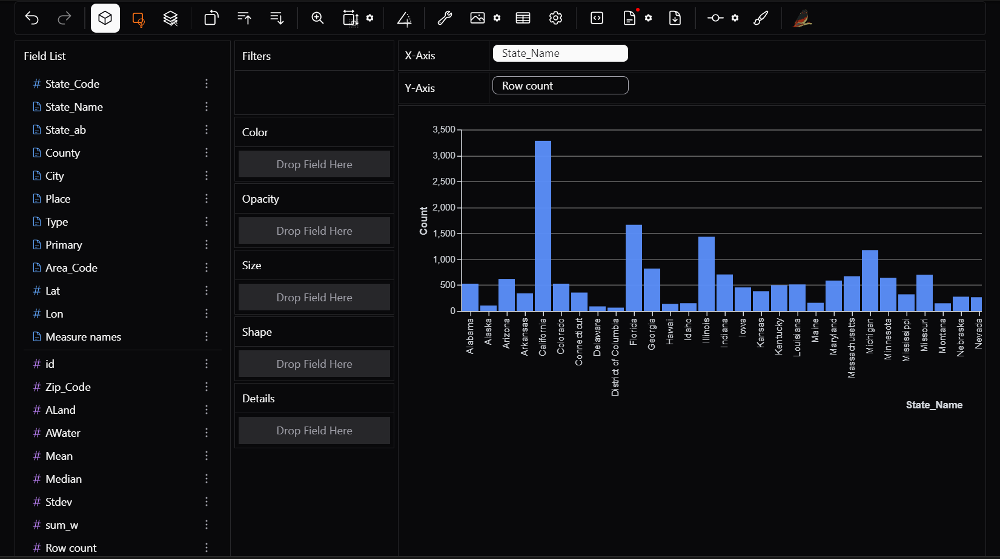

pip install pygwalkerPyGWalker
PyGWalker is a python library developed by Kanaries Open Source Community.
PyGWalker can simplify your Jupyter Notebook data analysis and data visualization workflow, by turning your pandas dataframe into an interactive user interface for visual exploration.
PyGWalker (pronounced like “Pig Walker”, just for fun) is named as an abbreviation of “Python binding of Graphic Walker”. It integrates Jupyter Notebook with Graphic Walker, an open-source alternative to Tableau. It allows data scientists to visualize / clean / annotates the data with simple drag-and-drop operations and even natural language queries.
Objectives of PyGWalker
PyGWalker (Python + Graphic Walker) is designed to bridge the gap between data analysis and interactive visualization in Jupyter Notebooks. Its main objectives are:
üîπ 1. Simplify Data Exploration
- Provide a drag-and-drop interface for visualizing data without writing complex code.
- Enable quick analysis from large datasets.
üîπ 2. Enhance Productivity for Data Scientists
- Less time is spent on coding and debugging visualization scripts , allowing users to focus on data analysis.
üîπ 3. Provide an Intuitive UI Like Tableau
- Offer an Tableau-like experience inside Jupyter Notebooks.
- Make the viewing and manipulation of data interactive.
üîπ 4. Efficiently Handle Large Datasets
- Use DuckDB for efficient data aggregation and query execution.
- Handle large datasets without slowing down.
üîπ 5. Seamless Pandas Integration
üîπ 6. Allow Customizable & Interactive Visualizations
- Support for bar, line, scatter, pie charts, and more.
- Allow users to filter, group, and aggregate data dynamically.
üîπ 7. Promote Open-Source & Collaboration
- Provide a lightweight, open-source alternative to BI(Bussiness Intelligence) tools like Tableau.
- Support exporting visualisations as images, HTML, or shareable reports.
Why Use PyGWalker?
- No need to manually code every visualization
- quicker investigation and analysis
- Handles large datasets efficiently
- Interactive, shareable insights
To install PyGWalker, open command propmt and execute the following code
now we can import the library
import pygwalker as pyg
import pandas as pdhere we use the dataset kaggle_income(source link at end) which contains information of income at households in different cities of all states of the USA
df = pd.read_csv('C:\Users\hp\PSDV\Assignment 4\income.csv' , encoding = 'latin-1')
df.head()now we will read the data using PyGWalker
pyg.walk(df)Key features
1) Drag and drop to X and Y axis
You can simply drag your dataset columns onto the X and Y axes to create charts.
Want to see row count per state? Drag State_Name to X and Row count to Y

Need a an area chart to compare county wise mean income? Drage county to X and Mean to Y
2) Aggregations
PyGWalker automatically aggregates data to give you meaningful insights.
Want to see total income per sate? — PyGWalker will sum it for you. But hey, you realise that different states have different no of cities considered, so the states with more number of cities considered will have a higher value. so it would be better to average these out.
How do I do this?
Just switch the aggregation to AVG instead of SUM.
to use aggregation, aggregation mode must be toggled on.
Following aggregations can be used: - Sum → Total of all values - Count → Number of occurrences - Median → Median of all values - Min/Max → Smallest and largest values - Standard Deviation → standard deviation of all values - Variation → variation of all values
3) Filters
Data exploration is incomplete without filters! PyGWalker allows you to filter data interactively:
Want to see the data for only some specific states? Just drag and drop state_Name column in filter box.
Need to analyze only states with cities with median income only in a specific range? Apply range filter on median.
4) Color
Make your charts visually appealing and informative by adding color categories.
Assign different colors to regions, product categories, or user segments.
Example: In a bar chart of State_Name vs Mean income, drag the mean block to color filter for better comparison.

5) Opacity, Size, Shape, Details
Take your scatter plots and bubble charts to the next level: - Opacity → Adjust transparency to handle dense data points. - Size → Map a column (e.g., income) to bubble size in a scatter plot. - Shape → Differentiate categories using shapes instead of colors. - Details → Add extra information on hover (e.g., show Customer Name when hovering over a data point).
6) Sorting
Quickly sort data in ascending or descending order:
Want to see State with highest avg income? just click on sorth in descending order.
7) Transpose
Use this feature if you want to swap X and Y axis.
8) Layout Customisation
Organize your visualizations exactly how you want. PyGWalker provides: - Grid layout → Arrange multiple charts side by side. - Resizable panels → Adjust chart sizes for better comparisons. - Multiple tabs → Separate different analyses into different tabs.
9) Painter Mode
Want to highlight trends, annotate data points, or mark key areas?
PyGWalker lets you draw directly on charts to emphasize insights. This is great for presentations and storytelling.
10) Different Chart Types
PyGWalker supports a variety of built-in visualizations, including: - Bar Charts → Compare categorical data - Line Charts → Show trends over time - Scatter Plots → Analyze relationships between two variables - Geospatial Maps → Visualize location-based data - Pie Charts → Display proportions
We can change between chart types without having to write a single line of code.
11) Data tab
Need to see your raw data while analyzing?
The Data Tab gives you a spreadsheet-like view right inside PyGWalker.
Quickly scan through row-level data. Apply filters, sorting, and calculations directly
12) Export Options
PyGWalker lets you export your insights for presentations and sharing: - Save as an Image → PNG/JPG format - Export as HTML → Share an interactive report - Copy to Clipboard → Paste directly into documents or emails
Applications of PyGWalker
Whether you’re a data scientist, business analyst, marketer, or researcher, PyGWalker helps you uncover insights and create visual stories efficiently. Here are some of its key applications:
1. Exploratory Data Analysis (EDA)
Before diving into machine learning or reporting, it’s crucial to understand the dataset. PyGWalker helps with:
- Identifying missing values and data distributions - Understanding relationships between variables
- Spotting trends and patterns in time-series data
Example: A data scientist analyzing customer demographics can quickly visualize age distributions and spending habits.
2. Business Intelligence and Decision-Making
Managers and analysts rely on dashboards for data-driven decisions. PyGWalker makes it easier to:
- Track sales trends over time
- Analyze revenue by product category
- Segment customers based on behavior
- Compare regional market performance
Example: A sales manager can filter data by region and product type to spot profitable trends.
3. Marketing Analytics and Customer Insights
Marketing teams use data to optimize campaigns. PyGWalker supports:
- Conversion funnel analysis to understand drop-off points
- A/B testing results for performance comparisons
- Customer churn analysis to identify retention patterns
- Ad performance tracking across multiple channels
Example: A digital marketer can analyze campaign effectiveness without writing SQL queries.
4. Healthcare and Medical Research
Medical professionals and researchers rely on data visualization for better decision-making. PyGWalker helps with:
- Tracking disease outbreaks over time
- Analyzing patient demographics and health trends
- Comparing treatment effectiveness across groups
- Monitoring hospital resource utilization
Example: A public health researcher can visualize disease spread patterns across different regions.
5. Financial Data Analysis
Finance professionals need real-time data monitoring for risk management and investments. PyGWalker enables:
- Stock market trend analysis using line charts
- Expense vs. revenue tracking
- Fraud detection through anomaly identification
- Portfolio performance comparisons
Example: An investment analyst can visualize stock price movements and sort data by highest or lowest returns.
6. Engineering and System Monitoring
IT and DevOps professionals need real-time monitoring tools. PyGWalker can be used for:
- Analyzing server performance logs
- Detecting network anomalies in large datasets
- Monitoring IoT sensor data trends in smart cities and industries
Example: A DevOps engineer can filter logs and visualize server downtime incidents in real time.
7. Academic Research and Education
Researchers and students deal with large datasets in various fields. PyGWalker simplifies:
- Data exploration for statistical research
- Visualization of survey results
- Teaching data visualization concepts interactively
Example: A professor can use PyGWalker in a data science course to help students explore datasets without coding.
8. Geospatial Data Visualization
Understanding location-based insights is easier with PyGWalker. It supports:
- Customer distribution analysis to identify high-density areas
- Delivery route optimization based on travel times
- Geospatial heatmaps for trends like weather patterns or crime rates
Example: A logistics company can visualize delivery performance in different cities and optimize routes.
9. Integration with Streamlit
PyGWalker integrates seamlessly with Streamlit, allowing you to build interactive data exploration apps with minimal code. This combination enables users to explore datasets visually without needing to write complex queries or charts manually.
- No-code data visualization: Drag and drop to explore datasets dynamically.
- Interactive dashboards: Create live, filterable reports in a web app.
- Easy deployment: Share insights instantly without complex front-end coding.
To integrate PyGWalker with Streamlit, write the following code and save your file as app.py
import streamlit as st
import pandas as pd
import pygwalker as pyg
# Load sample DataFrame
df = pd.DataFrame({'A': [1, 2, 3], 'B': [4, 5, 6]})
# Generate PyGWalker visualization as HTML
pyg_html = pyg.walk(df, return_html=True)
# Embed PyGWalker in Streamlit
st.components.v1.html(pyg_html, height=600, scrolling=True)now open terminal at the project folder and execute
streamlit run app.pynow we can analyse data directly in the streamlit app